.jpg){kind=link}


.jpg){kind=link}


.jpg){kind=link}


.jpg){kind=link}

Yogyakarta
Meliá Purosani Yogyakarta
In central Yogyakarta near Malioboro, this hotel offers rooms and suites, tropical gardens, a lagoon-style pool, several dining venues, and an on-site spa.
Check roomsOfficial hotel website · opens in a new tab
Asia / A place to get to know
Island volcanoes, royal Java and remarkable temple landscapes

Welcome to Indonesia
Indonesia's islands bring volcanic landscapes, rice-growing valleys and rich maritime ecosystems into one archipelago. Around Yogyakarta, royal buildings, batik and monumental temples offer a close view of Java's cultural heritage.
Explore a little further
Landmarks, landscapes and the stories behind them. Select a photograph for a closer look.
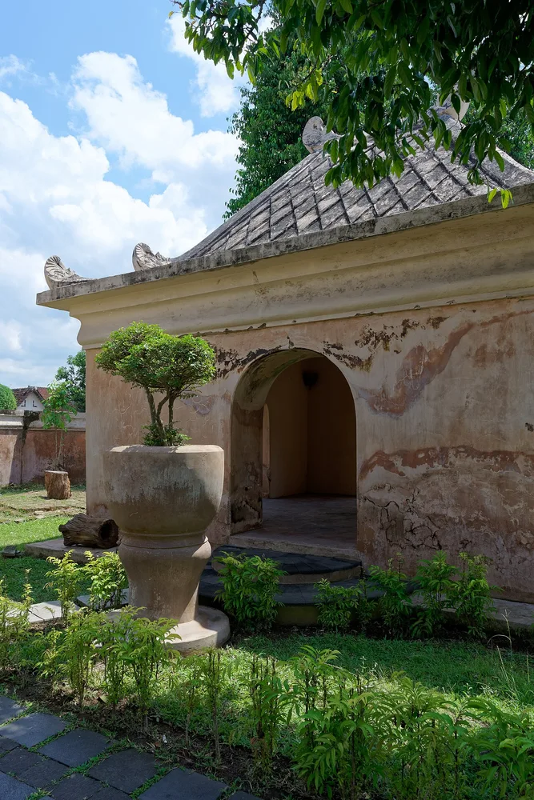
Near Yogyakarta's Kraton, Taman Sari preserves parts of an eighteenth-century royal garden and bathing complex. Pools and gateways recall the sultanate's leisure spaces and distinctive architectural traditions.
Jakub Hałun · CC BY-SA 4.0 . Resized as needed and converted to WebP. No crop.
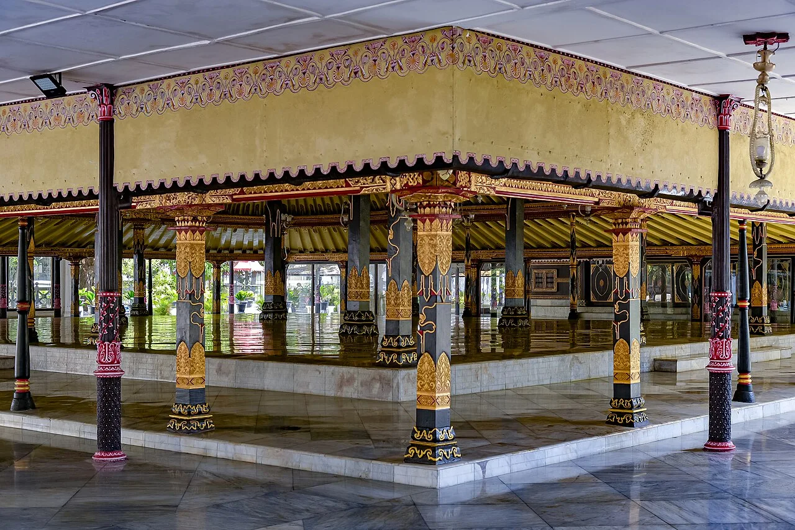
Yogyakarta's Kraton remains the ceremonial heart of the sultanate. Its courtyards, pavilions and collections introduce Javanese court culture, with architecture arranged according to a carefully planned symbolic order.
Jorge Franganillo · CC BY 2.0 . Resized as needed and converted to WebP. No crop.
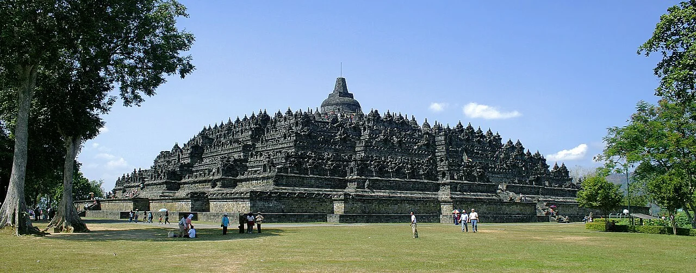
Built in the eighth and ninth centuries in Central Java, Borobudur is a major Buddhist monument. Relief-covered terraces rise to circular platforms and perforated stupas containing Buddha images.
Gunawan Kartapranata · Public domain . Resized as needed and converted to WebP. No crop.
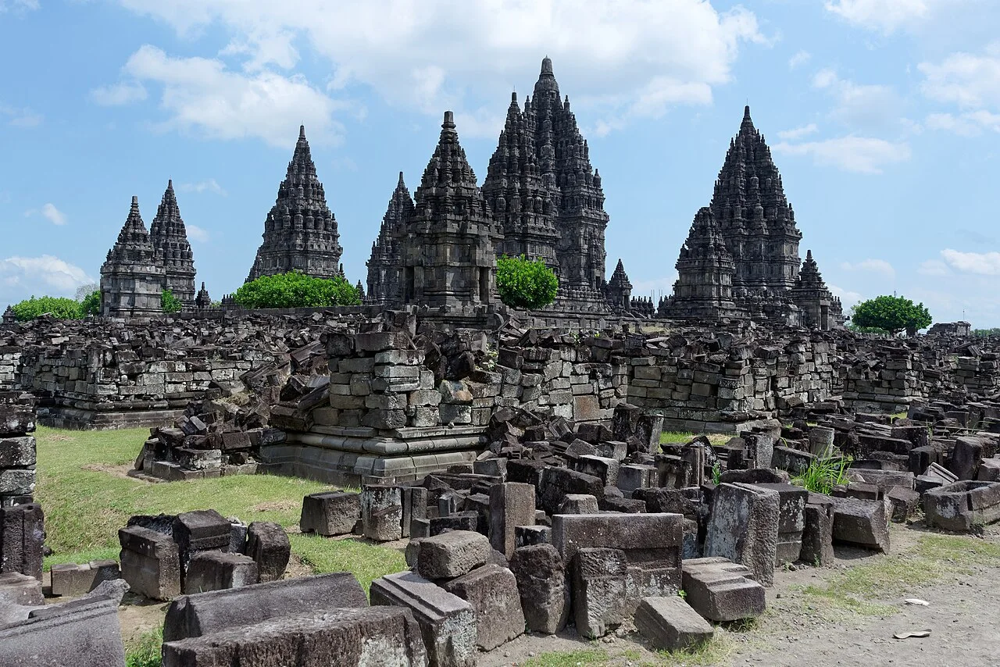
This ninth-century temple compound is one of Java's great Hindu monuments. Its soaring towers honour Shiva, Vishnu and Brahma, while carved reliefs relate stories including the Ramayana.
Jakub Hałun · CC BY-SA 4.0 . Resized as needed and converted to WebP. No crop.
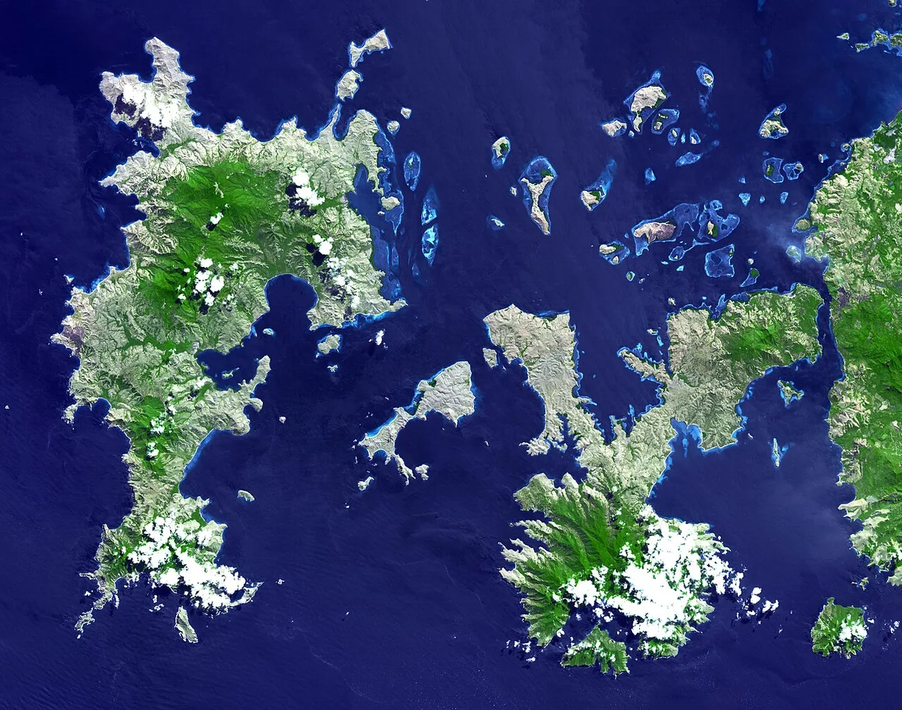
This island and marine national park protects the habitat of the Komodo dragon. Dry hillsides, beaches and surrounding coral-rich waters form an important landscape of terrestrial and marine biodiversity.
NASA/METI/AIST/Japan Space Systems, and U.S./Japan ASTER Science Team · Public domain . Resized as needed and converted to WebP. No crop.
Explore a little further
Yogyakarta's batik makers and wayang kulit puppeteers sustain skilled Javanese traditions. Performances of the Ramayana at Prambanan connect classical storytelling with one of the region's great temple settings.
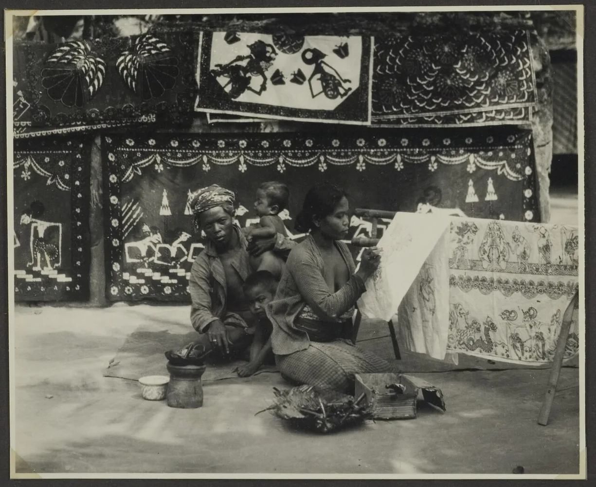
Batik in Yogyakarta
Foto Zindler (Jogjakarta) · CC BY 4.0 . Resized as needed and converted to WebP. No crop.
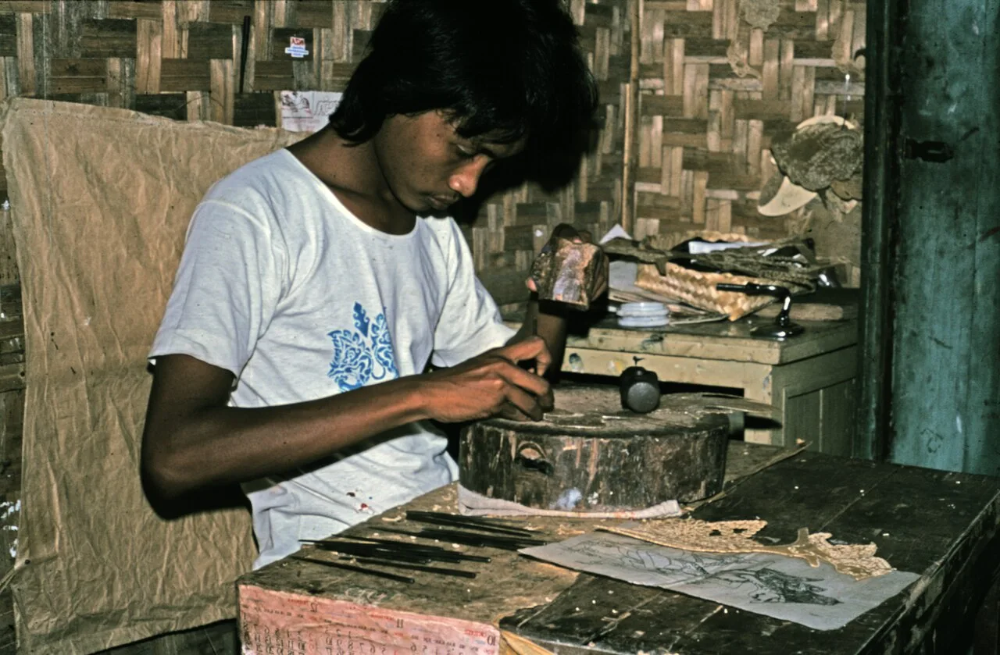
Wayang kulit in Yogyakarta
Steijlen, Fridus · CC BY 4.0 . Resized as needed and converted to WebP. No crop.
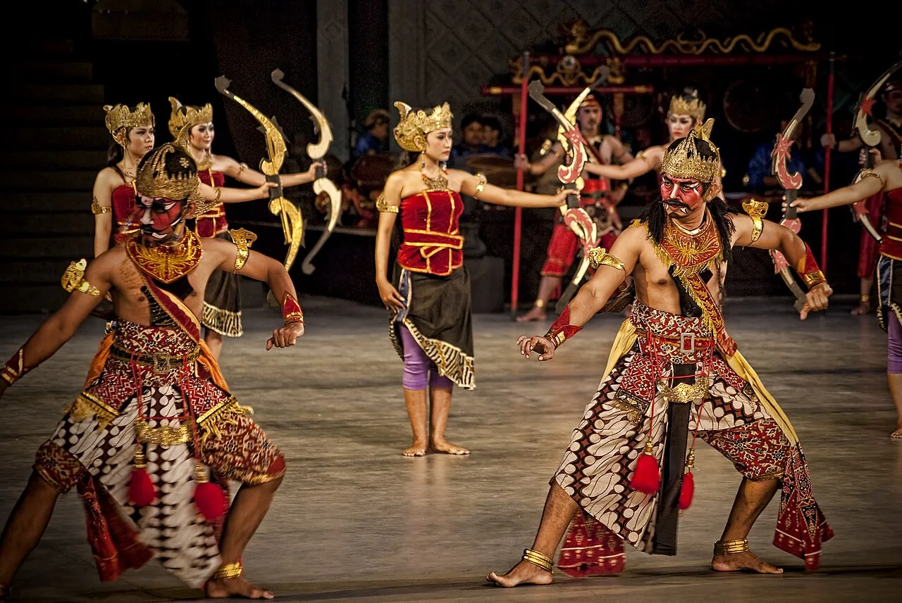
Ramayana Ballet at Prambanan
Philip Nalangan · CC BY-SA 4.0 . Resized as needed and converted to WebP. No crop.
Explore a little further
Indonesian food reflects many island and regional traditions, from Minangkabau rendang to Yogyakarta's sweet young-jackfruit gudeg.
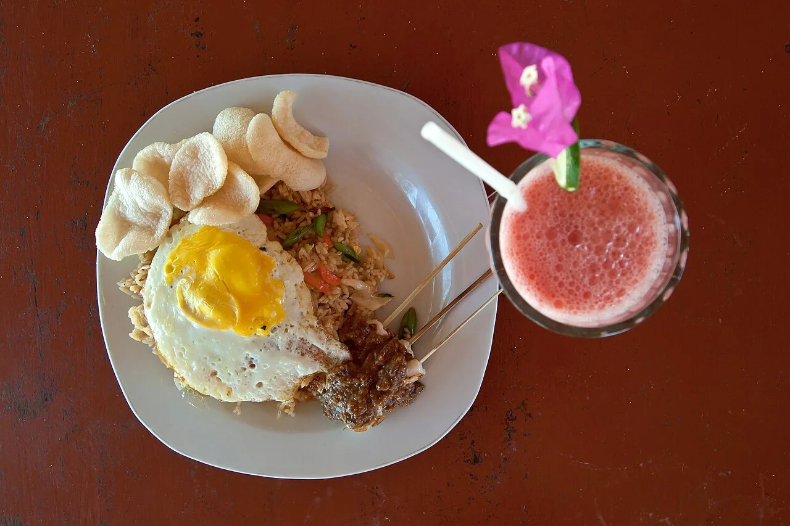
Nasi goreng is Indonesian fried rice, commonly seasoned with sweet soy sauce and served with varied accompaniments.
Vyacheslav Argenberg · CC BY 4.0 . Resized as needed and converted to WebP. No crop.
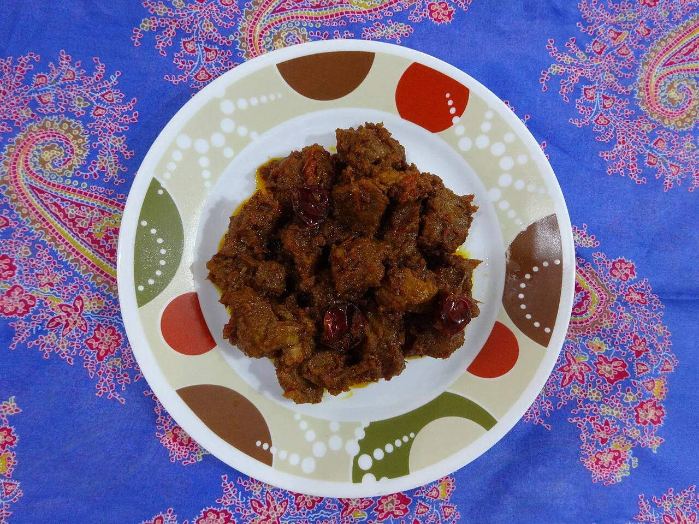
Rendang is a Minangkabau dish in which meat is slowly cooked with coconut milk and spices until deeply flavoured.
Miansari66 · CC0 . Resized as needed and converted to WebP. No crop.
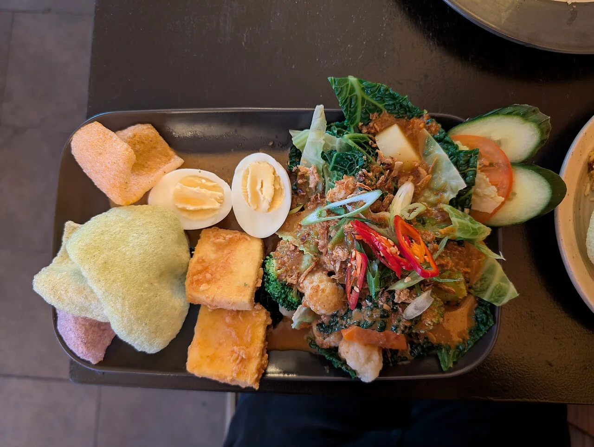
Gado-gado combines vegetables and other ingredients, often tofu, tempeh and egg, with a peanut sauce.
Andy Li · CC0 . Resized as needed and converted to WebP. No crop.
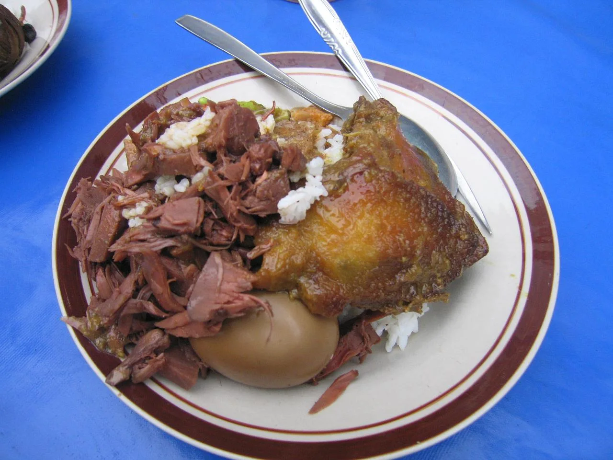
Gudeg is young jackfruit slowly cooked with coconut milk and seasonings, a sweet-savoury speciality of Yogyakarta.
Ivan Lanin from Jakarta, Indonesia · CC BY-SA 2.0 . Resized as needed and converted to WebP. No crop.
Explore a little further
Markets, cultivated rice terraces and volcanic landscapes offer different perspectives on life across Java and Bali.
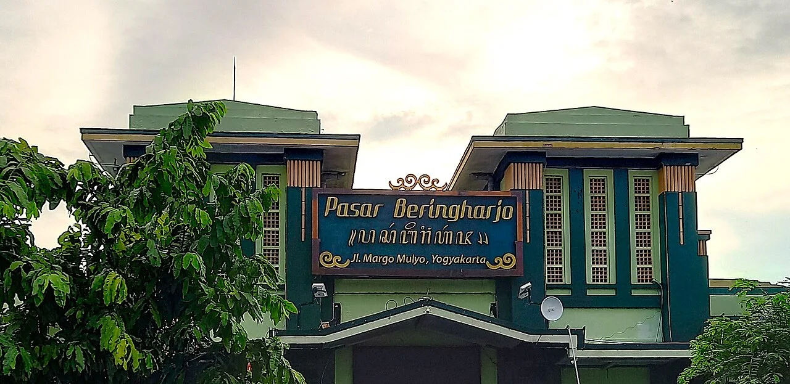
Browse Yogyakarta's traditional market for batik, textiles and everyday goods, observing the trading life close to Malioboro and the royal district.
Sam Hidayat · CC BY-SA 4.0 . Resized as needed and converted to WebP. No crop.
View the terraced fields near Ubud and walk only on paths open to visitors, learning about the collective water-management traditions of Bali's subak system.
Pinterpandai · CC BY-SA 3.0 . Resized as needed and converted to WebP. No crop.
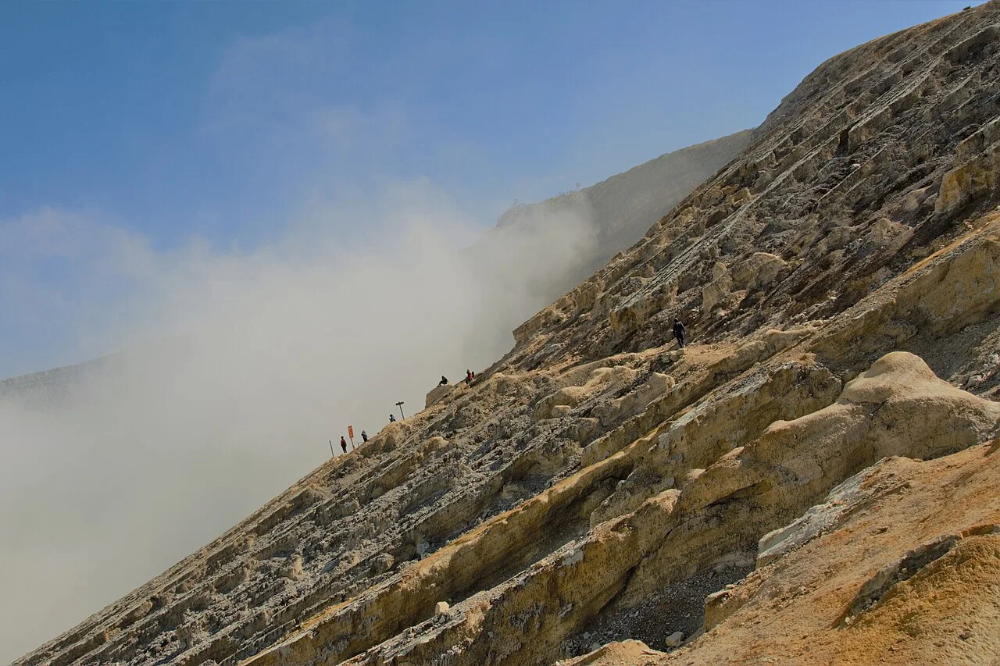
Explore the volcanic landscape from currently permitted visitor areas with appropriate local guidance, checking official access and volcanic conditions before planning a visit.
Magdawszedobylska · CC BY-SA 4.0 . Resized as needed and converted to WebP. No crop.
Explore a little further
Yogyakarta's Alun-Alun Kidul is associated with evening food and gathering, while Seminyak's beachfront offers sunset views and restaurants.
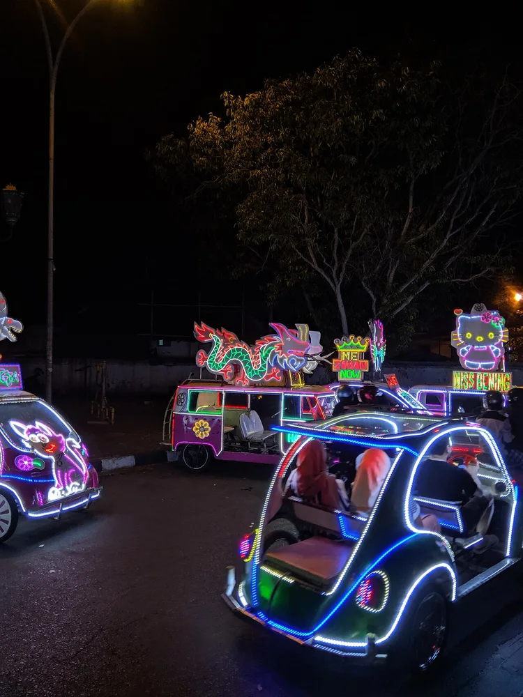
Alun-Alun Kidul, Yogyakarta
Gunarta · CC BY-SA 4.0 . Resized as needed and converted to WebP. No crop.
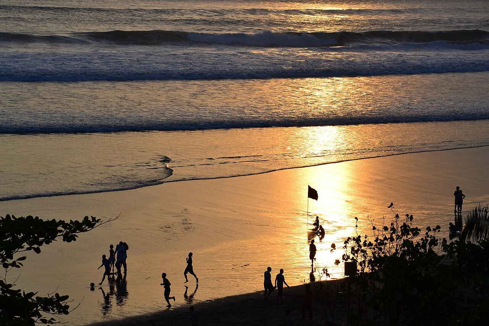
Seminyak Beach
Simon_sees from Australia · CC BY 2.0 . Resized as needed and converted to WebP. No crop.
Explore a little further
A country overview with selected attraction markers. Use local transport information to plan the route between regions.
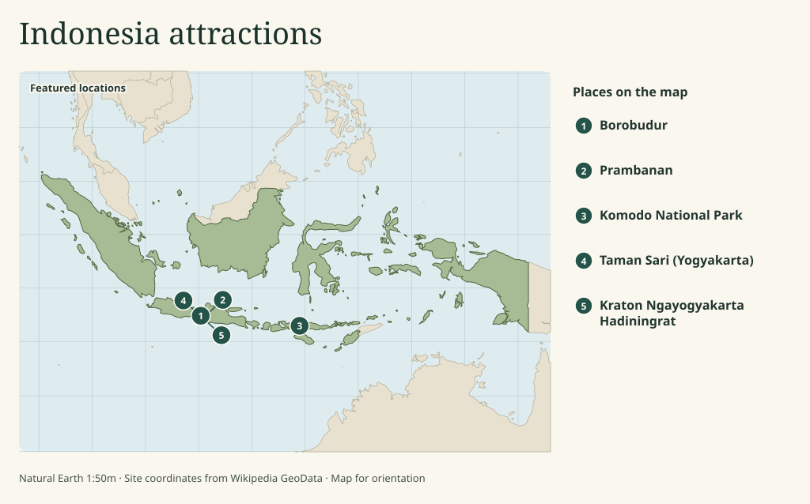
Illustrative overview. Marker locations and map sources are documented below.
A place to settle in
Two places to consider for your trip. Check room choices, current prices and availability directly with each hotel.
Yogyakarta
In central Yogyakarta near Malioboro, this hotel offers rooms and suites, tropical gardens, a lagoon-style pool, several dining venues, and an on-site spa.
Check roomsOfficial hotel website · opens in a new tab
Yogyakarta
A heritage hotel on Jalan Jenderal Sudirman in central Yogyakarta, combining European, Chinese, and Javanese design influences with guestrooms, dining, and a swimming pool.
Check roomsOfficial hotel website · opens in a new tab
The hotel sets its prices, booking terms and payment currency. Some properties confirm reservations after an enquiry.
Know your money
Get familiar with the local currency and estimate what an amount in your own currency is worth.
Daily reference Rates By Exchange Rate API . The rate date appears with your estimate.
Morning to evening · Indonesia
Jorge Franganillo · CC BY 2.0 . Resized as needed and converted to WebP. No crop.
Jakub Hałun · CC BY-SA 4.0 . Resized as needed and converted to WebP. No crop.
Sam Hidayat · CC BY-SA 4.0 . Resized as needed and converted to WebP. No crop.
Gunarta · CC BY-SA 4.0 . Resized as needed and converted to WebP. No crop.
Suggested order and approximate times, with breaks for meals and travel. Confirm access, reservations, transport and operating hours locally. Evening photographs do not guarantee an event or performance.
Confirm arrangements with the official visitor resource .
Visitor resource: https://www.indonesia.travel/gb/en/home
Guide: Atlas & Away · Indonesia · researched 18 November 2026.
Explore a little further
A starter in Indonesian. The pronunciation hints are approximate; listen to local speakers and ask politely when unsure.
| Phrase | Meaning | Say it approximately |
|---|---|---|
| Selamat pagi | Good morning | — |
| Terima kasih | Thanks | — |
| Permisi | Pardon me | — |
| Berapa harganya? | What does it cost? | — |
| Bisa tolong bantu saya? | Could you help me? | — |
A little preparation
0 of 4 preparations complete
Saved places and checklists use this browser’s local storage. They are not an account or a booking.
Before you go
The example itinerary stays around Yogyakarta. The full country guide covers several regions; allow extra days and transport for places beyond that route.
Use the Hotels section to open a property’s official website and check rooms, prices and booking terms. You complete any reservation and payment with the hotel.
Open the enquiry page or email profannan712@gmail.com .
Guide researched on 18 November 2026. Text and code were developed with ChatGPT/Codex assistance for this student learning project.
Phrase reference: Indonesian phrasebook .
Natural Earth (base data), ChatGPT in Codex (map design) · Public-domain Natural Earth base data . Projected Natural Earth boundaries, added labels and site markers, and exported SVG.